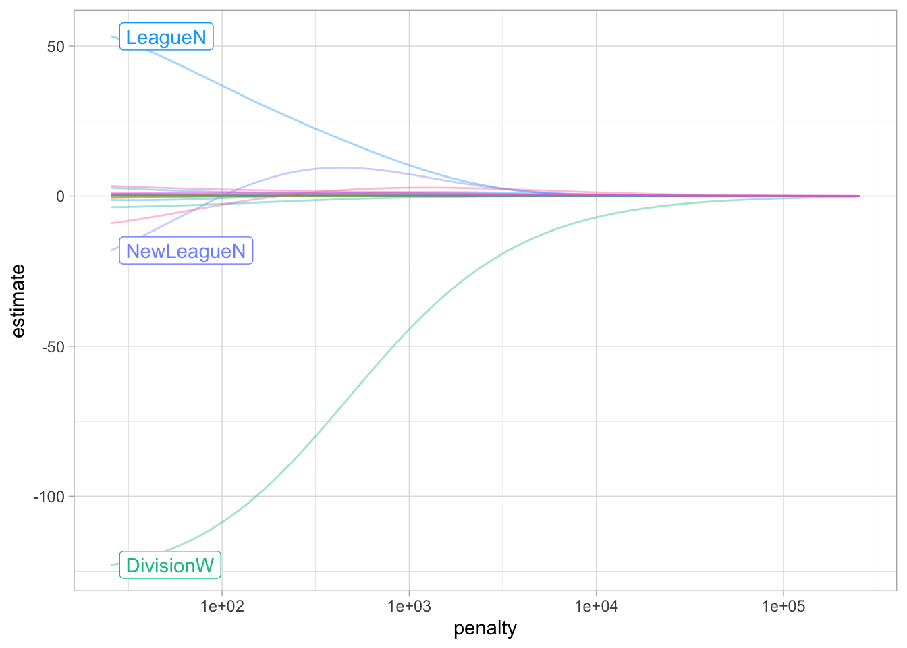
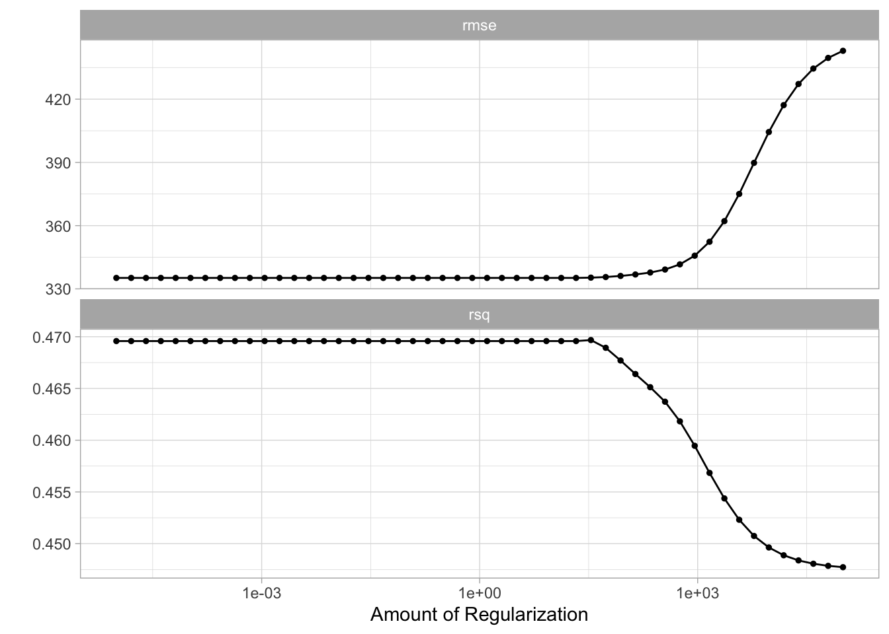
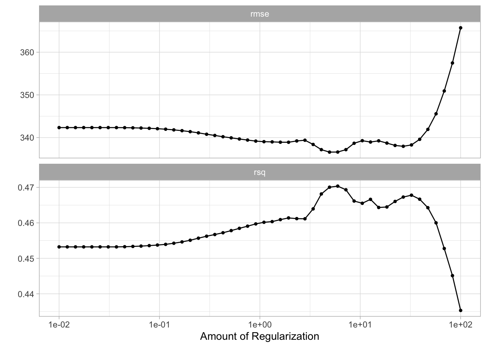
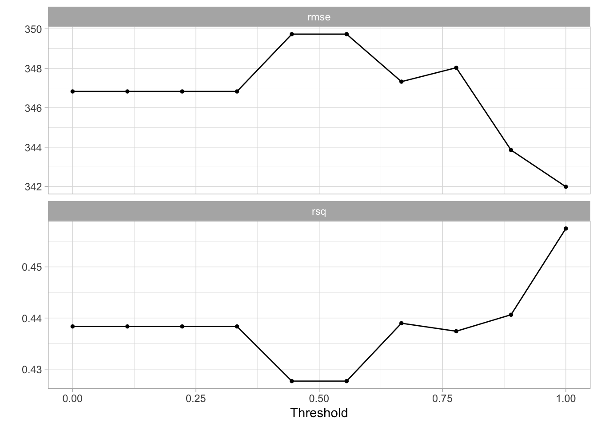

library(tidymodels)
library(ISLR)
Hitters <- as_tibble(Hitters) %>%
filter(!is.na(Salary))6 Linear Model Selection and Regularization
This lab will take a look at regularization models and hyperparameter tuning. These models are related to the models we saw in chapter 3 and 4, with the difference that they contain a regularization term. This chapter will use parsnip for model fitting and recipes and workflows to perform the transformations, and tune and dials to tune the hyperparameters of the model.
We will be using the Hitters data set from the ISLR package. We wish to predict the baseball players Salary based on several different characteristics which are included in the data set. Since we wish to predict Salary, then we need to remove any missing data from that column. Otherwise, we won’t be able to run the models.
6.1 Best Subset Selection
tidymodels does not currently support subset selection methods, and it unlikely to include it in the near future.
6.2 Forward and Backward Stepwise Selection
tidymodels does not currently support forward and backward stepwise selection methods, and it unlikely to include it in the near future.
6.3 Ridge Regression
We will use the glmnet package to perform ridge regression. parsnip does not have a dedicated function to create a ridge regression model specification. You need to use linear_reg() and set mixture = 0 to specify a ridge model. The mixture argument specifies the amount of different types of regularization, mixture = 0 specifies only ridge regularization and mixture = 1 specifies only lasso regularization. Setting mixture to a value between 0 and 1 lets us use both. When using the glmnet engine we also need to set a penalty to be able to fit the model. We will set this value to 0 for now, it is not the best value, but we will look at how to select the best value in a little bit.
ridge_spec <- linear_reg(mixture = 0, penalty = 0) %>%
set_mode("regression") %>%
set_engine("glmnet")Once the specification is created we can fit it to our data. We will use all the predictors.
ridge_fit <- fit(ridge_spec, Salary ~ ., data = Hitters)The glmnet package will fit the model for all values of penalty at once, so let us see what the parameter estimate for the model is now that we have penalty = 0.
tidy(ridge_fit)# A tibble: 20 × 3
term estimate penalty
<chr> <dbl> <dbl>
1 (Intercept) 81.1 0
2 AtBat -0.682 0
3 Hits 2.77 0
4 HmRun -1.37 0
5 Runs 1.01 0
6 RBI 0.713 0
7 Walks 3.38 0
8 Years -9.07 0
9 CAtBat -0.00120 0
10 CHits 0.136 0
11 CHmRun 0.698 0
12 CRuns 0.296 0
13 CRBI 0.257 0
14 CWalks -0.279 0
15 LeagueN 53.2 0
16 DivisionW -123. 0
17 PutOuts 0.264 0
18 Assists 0.170 0
19 Errors -3.69 0
20 NewLeagueN -18.1 0Let us instead see what the estimates would be if the penalty was 11498.
tidy(ridge_fit, penalty = 11498)# A tibble: 20 × 3
term estimate penalty
<chr> <dbl> <dbl>
1 (Intercept) 407. 11498
2 AtBat 0.0370 11498
3 Hits 0.138 11498
4 HmRun 0.525 11498
5 Runs 0.231 11498
6 RBI 0.240 11498
7 Walks 0.290 11498
8 Years 1.11 11498
9 CAtBat 0.00314 11498
10 CHits 0.0117 11498
11 CHmRun 0.0876 11498
12 CRuns 0.0234 11498
13 CRBI 0.0242 11498
14 CWalks 0.0250 11498
15 LeagueN 0.0866 11498
16 DivisionW -6.23 11498
17 PutOuts 0.0165 11498
18 Assists 0.00262 11498
19 Errors -0.0206 11498
20 NewLeagueN 0.303 11498Notice how the estimates are decreasing when the amount of penalty goes up. Look below at the parameter estimates for penalty = 705 and penalty = 50.
tidy(ridge_fit, penalty = 705)# A tibble: 20 × 3
term estimate penalty
<chr> <dbl> <dbl>
1 (Intercept) 54.4 705
2 AtBat 0.112 705
3 Hits 0.656 705
4 HmRun 1.18 705
5 Runs 0.937 705
6 RBI 0.847 705
7 Walks 1.32 705
8 Years 2.58 705
9 CAtBat 0.0108 705
10 CHits 0.0468 705
11 CHmRun 0.338 705
12 CRuns 0.0937 705
13 CRBI 0.0979 705
14 CWalks 0.0718 705
15 LeagueN 13.7 705
16 DivisionW -54.7 705
17 PutOuts 0.119 705
18 Assists 0.0161 705
19 Errors -0.704 705
20 NewLeagueN 8.61 705tidy(ridge_fit, penalty = 50)# A tibble: 20 × 3
term estimate penalty
<chr> <dbl> <dbl>
1 (Intercept) 48.2 50
2 AtBat -0.354 50
3 Hits 1.95 50
4 HmRun -1.29 50
5 Runs 1.16 50
6 RBI 0.809 50
7 Walks 2.71 50
8 Years -6.20 50
9 CAtBat 0.00609 50
10 CHits 0.107 50
11 CHmRun 0.629 50
12 CRuns 0.217 50
13 CRBI 0.215 50
14 CWalks -0.149 50
15 LeagueN 45.9 50
16 DivisionW -118. 50
17 PutOuts 0.250 50
18 Assists 0.121 50
19 Errors -3.28 50
20 NewLeagueN -9.42 50We can visualize how the magnitude of the coefficients are being regularized towards zero as the penalty goes up.
ridge_fit %>%
autoplot()
Prediction is done like normal, if we use predict() by itself, then penalty = 0 as we set in the model specification is used.
predict(ridge_fit, new_data = Hitters)# A tibble: 263 × 1
.pred
<dbl>
1 442.
2 676.
3 1059.
4 521.
5 543.
6 218.
7 74.7
8 96.1
9 809.
10 865.
# ℹ 253 more rowsbut we can also get predictions for other values of penalty by specifying it in predict()
predict(ridge_fit, new_data = Hitters, penalty = 500)# A tibble: 263 × 1
.pred
<dbl>
1 525.
2 620.
3 895.
4 425.
5 589.
6 179.
7 147.
8 187.
9 841.
10 840.
# ℹ 253 more rowsWe saw how we can fit a ridge model and make predictions for different values of penalty. But it would be nice if we could find the “best” value of the penalty. This is something we can use hyperparameter tuning for. Hyperparameter tuning is in its simplest form a way of fitting many models with different sets of hyperparameters trying to find one that performs “best”. The complexity in hyperparameter tuning can come from how you try different models. We will keep it simple for this lab and only look at grid search, only looking at evenly spaced parameter values. This is a fine enough approach if you have one or two tunable parameters but can become computationally infeasible. See the chapter on iterative search from Tidy Modeling with R for more information.
We start like normal by setting up a validation split. A K-fold cross-validation data set is created on the training data set with 10 folds.
Hitters_split <- initial_split(Hitters, strata = "Salary")
Hitters_train <- training(Hitters_split)
Hitters_test <- testing(Hitters_split)
Hitters_fold <- vfold_cv(Hitters_train, v = 10)We can use the tune_grid() function to perform hyperparameter tuning using a grid search. tune_grid() needs 3 different thing;
- a
workflowobject containing the model and preprocessor, - a
rsetobject containing the resamples theworkflowshould be fitted within, and - a tibble containing the parameter values to be evaluated.
Optionally a metric set of performance metrics can be supplied for evaluation. If you don’t set one then a default set of performance metrics is used.
We already have a resample object created in Hitters_fold. Now we should create the workflow specification next.
We just used the data set as is when we fit the model earlier. But ridge regression is scale sensitive so we need to make sure that the variables are on the same scale. We can use step_normalize(). Secondly let us deal with the factor variables ourself using step_novel() and step_dummy().
ridge_recipe <-
recipe(formula = Salary ~ ., data = Hitters_train) %>%
step_novel(all_nominal_predictors()) %>%
step_dummy(all_nominal_predictors()) %>%
step_zv(all_predictors()) %>%
step_normalize(all_predictors())The model specification will look very similar to what we have seen earlier, but we will set penalty = tune(). This tells tune_grid() that the penalty parameter should be tuned.
ridge_spec <-
linear_reg(penalty = tune(), mixture = 0) %>%
set_mode("regression") %>%
set_engine("glmnet")Now we combine to create a workflow object.
ridge_workflow <- workflow() %>%
add_recipe(ridge_recipe) %>%
add_model(ridge_spec)The last thing we need is the values of penalty we are trying. This can be created using grid_regular() which creates a grid of evenly spaces parameter values. We use the penalty() function from the dials package to denote the parameter and set the range of the grid we are searching for. Note that this range is log-scaled.
penalty_grid <- grid_regular(penalty(range = c(-5, 5)), levels = 50)
penalty_grid# A tibble: 50 × 1
penalty
<dbl>
1 0.00001
2 0.0000160
3 0.0000256
4 0.0000409
5 0.0000655
6 0.000105
7 0.000168
8 0.000268
9 0.000429
10 0.000687
# ℹ 40 more rowsUsing 50 levels for one parameter might seem overkill and in many applications it is. But remember that glmnet fits all the models in one go so adding more levels to penalty doesn’t affect the computational speed much.
Now we have everything we need and we can fit all the models.
tune_res <- tune_grid(
ridge_workflow,
resamples = Hitters_fold,
grid = penalty_grid
)
tune_res# Tuning results
# 10-fold cross-validation
# A tibble: 10 × 4
splits id .metrics .notes
<list> <chr> <list> <list>
1 <split [176/20]> Fold01 <tibble [100 × 5]> <tibble [0 × 3]>
2 <split [176/20]> Fold02 <tibble [100 × 5]> <tibble [0 × 3]>
3 <split [176/20]> Fold03 <tibble [100 × 5]> <tibble [0 × 3]>
4 <split [176/20]> Fold04 <tibble [100 × 5]> <tibble [0 × 3]>
5 <split [176/20]> Fold05 <tibble [100 × 5]> <tibble [0 × 3]>
6 <split [176/20]> Fold06 <tibble [100 × 5]> <tibble [0 × 3]>
7 <split [177/19]> Fold07 <tibble [100 × 5]> <tibble [0 × 3]>
8 <split [177/19]> Fold08 <tibble [100 × 5]> <tibble [0 × 3]>
9 <split [177/19]> Fold09 <tibble [100 × 5]> <tibble [0 × 3]>
10 <split [177/19]> Fold10 <tibble [100 × 5]> <tibble [0 × 3]>The output of tune_grid() can be hard to read by itself unprocessed. autoplot() creates a great visualization
autoplot(tune_res)
Here we see that the amount of regularization affects the performance metrics differently. Note how there are areas where the amount of regularization doesn’t have any meaningful influence on the coefficient estimates. We can also see the raw metrics that created this chart by calling collect_matrics().
collect_metrics(tune_res)# A tibble: 100 × 7
penalty .metric .estimator mean n std_err .config
<dbl> <chr> <chr> <dbl> <int> <dbl> <chr>
1 0.00001 rmse standard 335. 10 31.2 Preprocessor1_Model01
2 0.00001 rsq standard 0.470 10 0.0615 Preprocessor1_Model01
3 0.0000160 rmse standard 335. 10 31.2 Preprocessor1_Model02
4 0.0000160 rsq standard 0.470 10 0.0615 Preprocessor1_Model02
5 0.0000256 rmse standard 335. 10 31.2 Preprocessor1_Model03
6 0.0000256 rsq standard 0.470 10 0.0615 Preprocessor1_Model03
7 0.0000409 rmse standard 335. 10 31.2 Preprocessor1_Model04
8 0.0000409 rsq standard 0.470 10 0.0615 Preprocessor1_Model04
9 0.0000655 rmse standard 335. 10 31.2 Preprocessor1_Model05
10 0.0000655 rsq standard 0.470 10 0.0615 Preprocessor1_Model05
# ℹ 90 more rowsThe “best” values of this can be selected using select_best(), this function requires you to specify a matric that it should select against.
best_penalty <- select_best(tune_res, metric = "rsq")
best_penalty# A tibble: 1 × 2
penalty .config
<dbl> <chr>
1 33.9 Preprocessor1_Model33This value of penalty can then be used with finalize_workflow() to update/finalize the recipe by replacing tune() with the value of best_penalty. Now, this model should be fit again, this time using the whole training data set.
ridge_final <- finalize_workflow(ridge_workflow, best_penalty)
ridge_final_fit <- fit(ridge_final, data = Hitters_train)This final model can now be applied on our testing data set to validate the performance
augment(ridge_final_fit, new_data = Hitters_test) %>%
rsq(truth = Salary, estimate = .pred)# A tibble: 1 × 3
.metric .estimator .estimate
<chr> <chr> <dbl>
1 rsq standard 0.461And it performs fairly well given what we saw earlier.
6.4 The Lasso
We will use the glmnet package to perform lasso regression. parsnip does not have a dedicated function to create a ridge regression model specification. You need to use linear_reg() and set mixture = 1 to specify a lasso model. The mixture argument specifies the amount of different types of regularization, mixture = 0 specifies only ridge regularization and mixture = 1 specifies only lasso regularization. Setting mixture to a value between 0 and 1 lets us use both.
The following procedure will be very similar to what we saw in the ridge regression section. The preprocessing needed is the same, but let us write it out one more time.
lasso_recipe <-
recipe(formula = Salary ~ ., data = Hitters_train) %>%
step_novel(all_nominal_predictors()) %>%
step_dummy(all_nominal_predictors()) %>%
step_zv(all_predictors()) %>%
step_normalize(all_predictors())Next, we finish the lasso regression workflow.
lasso_spec <-
linear_reg(penalty = tune(), mixture = 1) %>%
set_mode("regression") %>%
set_engine("glmnet")
lasso_workflow <- workflow() %>%
add_recipe(lasso_recipe) %>%
add_model(lasso_spec)While we are doing a different kind of regularization we still use the same penalty argument. I have picked a different range for the values of penalty since I know it will be a good range. You would in practice have to cast a wide net at first and then narrow on the range of interest.
penalty_grid <- grid_regular(penalty(range = c(-2, 2)), levels = 50)And we can use tune_grid() again.
tune_res <- tune_grid(
lasso_workflow,
resamples = Hitters_fold,
grid = penalty_grid
)
autoplot(tune_res)
We select the best value of penalty using select_best()
best_penalty <- select_best(tune_res, metric = "rsq")And refit the using the whole training data set.
lasso_final <- finalize_workflow(lasso_workflow, best_penalty)
lasso_final_fit <- fit(lasso_final, data = Hitters_train)And we are done, by calculating the rsq value for the lasso model can we see that for this data ridge regression outperform lasso regression.
augment(lasso_final_fit, new_data = Hitters_test) %>%
rsq(truth = Salary, estimate = .pred)# A tibble: 1 × 3
.metric .estimator .estimate
<chr> <chr> <dbl>
1 rsq standard 0.4466.5 Principal Components Regression
We will talk more about principal components analysis in chapter 10. This section will show how principal components can be used as a dimensionality reduction preprocessing step.
I will treat principal component regression as a linear model with PCA transformations in the preprocessing. But using the tidymodels framework then this is still mostly one model.
lm_spec <-
linear_reg() %>%
set_mode("regression") %>%
set_engine("lm")The preprocessing recipe will closely resemble the recipe we saw in the ridge and lasso sections. The main difference is that we end the recipe with step_pca() which will perform principal component analysis on all the predictors, and return the components that explain threshold percent of the variance. We have set threshold = tune() so we can treat the threshold as a hyperparameter to be tuned. By using workflows and tune together can be tune parameters in the preprocessing as well as parameters in the models.
pca_recipe <-
recipe(formula = Salary ~ ., data = Hitters_train) %>%
step_novel(all_nominal_predictors()) %>%
step_dummy(all_nominal_predictors()) %>%
step_zv(all_predictors()) %>%
step_normalize(all_predictors()) %>%
step_pca(all_predictors(), threshold = tune())
pca_workflow <-
workflow() %>%
add_recipe(pca_recipe) %>%
add_model(lm_spec)We create a smaller grid for threshold and we don’t need to modify the range since [0, 1] is an acceptable range.
threshold_grid <- grid_regular(threshold(), levels = 10)
threshold_grid# A tibble: 10 × 1
threshold
<dbl>
1 0
2 0.111
3 0.222
4 0.333
5 0.444
6 0.556
7 0.667
8 0.778
9 0.889
10 1 And now we fit using tune_grid(). This time we will actually perform 100 fits since we need to fit a model for each value of threshold within each fold.
tune_res <- tune_grid(
pca_workflow,
resamples = Hitters_fold,
grid = threshold_grid
)The results look a little shaky here.
autoplot(tune_res)
But we can still select the best model.
best_threshold <- select_best(tune_res, metric = "rmse")And fit the model much like have done a couple of times by now. The workflow is finalized using the value we selected with select_best(), and training using the full training data set.
pca_final <- finalize_workflow(pca_workflow, best_threshold)
pca_final_fit <- fit(pca_final, data = Hitters_train)6.6 Partial Least Squares
Lastly, we have a partial least squares model. We will treat this much like the PCA section and say that partial least squares calculations will be done as a preprocessing that we tune. The following code is almost identical to previous chapters and will be shown in full without many explanations to avoid repetition. If you skipped to this section, go back and read the previous sections for more commentary.
pls_recipe <-
recipe(formula = Salary ~ ., data = Hitters_train) %>%
step_novel(all_nominal_predictors()) %>%
step_dummy(all_nominal_predictors()) %>%
step_zv(all_predictors()) %>%
step_normalize(all_predictors()) %>%
step_pls(all_predictors(), num_comp = tune(), outcome = "Salary")
lm_spec <- linear_reg() %>%
set_mode("regression") %>%
set_engine("lm")
pls_workflow <- workflow() %>%
add_recipe(pls_recipe) %>%
add_model(lm_spec)
num_comp_grid <- grid_regular(num_comp(c(1, 20)), levels = 10)
tune_res <- tune_grid(
pls_workflow,
resamples = Hitters_fold,
grid = num_comp_grid
)
best_threshold <- select_best(tune_res, metric = "rmse")
pls_final <- finalize_workflow(pls_workflow, best_threshold)
pls_final_fit <- fit(pls_final, data = Hitters_train)